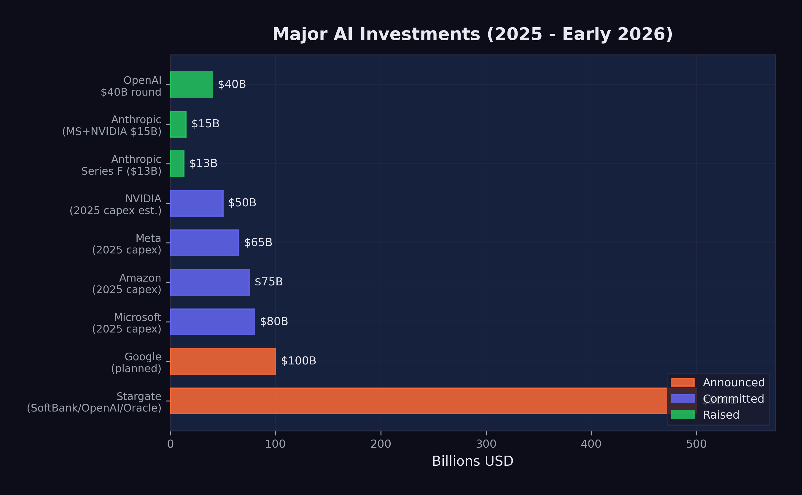

11 The Investment Tsunami
The numbers are staggering. In 2025 alone, over $700 billion was committed to AI infrastructure and development — more than the GDP of Switzerland, more than the annual defense budget of every NATO country except the United States, more than the combined market capitalization of most industries. By February 2026, the cumulative capital directed toward AI had reached a scale that defied easy comparison. It was not an investment cycle. It was a geological event: a tsunami of money reshaping the landscape of technology, energy, real estate, and labor markets simultaneously.
To understand the magnitude, consider this: the entire venture capital industry deployed roughly $170 billion globally in 2023. The AI sector alone attracted multiples of that figure in a single year. The question was no longer whether AI was attracting capital. The question was whether the capital being deployed bore any relationship to the value being created — or whether the world was witnessing the largest speculative bubble in the history of technology.
The answer, as of February 2026, was genuinely unclear. And that uncertainty was itself a defining feature of the moment.
11.1 The Funding Rounds
The private funding rounds of 2024 and 2025 rewrote every record in venture capital history. The amounts involved were so large that they resembled sovereign wealth transactions more than traditional startup fundraising.
OpenAI set the pace. In late 2024, the company closed a $40 billion funding round at a $300 billion post-money valuation, making it the most valuable private company in history (Startup Hub AI 2025). The round included contributions from Microsoft, SoftBank, and a constellation of sovereign wealth funds and institutional investors. To put the valuation in perspective: $300 billion exceeded the market capitalization of Intel, IBM, and Adobe combined. OpenAI’s revenue, while growing rapidly, was a fraction of what those mature businesses generated. The valuation was not a reflection of current economics. It was a bet on a future in which OpenAI’s models would be embedded in virtually every information workflow on the planet.
Anthropic followed a trajectory that was, if anything, even more remarkable for a company barely three years old. The fundraising cadence accelerated through 2025 with the relentlessness of a model training run.
In March 2025, Anthropic raised $3.5 billion led by Lightspeed Venture Partners at a $61.5 billion valuation (CNBC 2025a). This was a substantial round by any standard, but it was merely the opening act. The company had previously raised $8.3 billion, and the appetite for more was growing, not shrinking (Startup Hub AI 2025).
In September 2025, Anthropic closed its Series F: $13 billion at a $183 billion post-money valuation (Anthropic 2025). The round was notable not just for its size but for a disclosure that accompanied it — Anthropic’s annualized revenue run rate had exceeded $5 billion. This was real money, not vaporware. The company was selling API access to Claude at a scale that placed it among the fastest-growing enterprise software businesses in history.
But the fundraising did not stop there. In November 2025, Microsoft committed up to $5 billion and NVIDIA committed up to $10 billion, pushing Anthropic’s valuation to approximately $350 billion (CNBC 2025b). In less than eight months, Anthropic had gone from a $61.5 billion valuation to $350 billion — a nearly six-fold increase. No technology company had ever appreciated that quickly outside of a public market frenzy.
Google added fuel to the fire with an additional $1 billion investment in Anthropic in January 2025, bringing its total investment in the company to approximately $3 billion (CNBC 2025c). The strategic logic was transparent: Google was simultaneously building its own frontier models (Gemini) and hedging its bets by maintaining a significant stake in its primary competitor. It was the corporate equivalent of betting on every horse in the race. If Anthropic’s Claude eclipsed Gemini, Google would profit from its equity stake. If Gemini prevailed, the Anthropic investment was a modest insurance cost against a scenario that did not materialize. Either way, Google won.
The speed of these funding rounds was itself a signal. Traditional venture capital operates on timescales of months — due diligence, term sheet negotiation, legal review. The AI funding rounds of 2025 were closing in weeks. Investors who hesitated found themselves shut out. The fear of missing the most transformative technology of the century was a more powerful motivator than the fear of overpaying.
The cumulative picture was striking. Anthropic alone had raised over $40 billion in private funding by early 2026. OpenAI had raised a similar amount. These two companies, neither of which was publicly traded, had absorbed more capital than the entire biotechnology industry raised annually.
To appreciate the scale: Anthropic’s $350 billion valuation in November 2025 made it more valuable than 490 of the S&P 500 companies. It was worth more than Goldman Sachs, more than Caterpillar, more than most sovereign wealth funds’ entire portfolios. And it was still a private company with fewer than 2,000 employees.
11.2 The Infrastructure Buildout
If the private funding rounds were unprecedented, the infrastructure commitments were in a category of their own. The major technology companies were not just investing in AI research. They were building the physical infrastructure to deploy AI at planetary scale.
The Stargate Project was the most dramatic announcement. In January 2025, OpenAI unveiled a $500 billion AI infrastructure initiative backed by SoftBank, Oracle, and the UAE’s MGX investment fund (OpenAI 2025). The project called for the construction of massive data centers across the United States, beginning in Texas, specifically designed for AI training and inference workloads. The $500 billion figure was a multi-year commitment, not a single expenditure, but even its first-year allocation dwarfed anything the technology industry had previously attempted. President Trump endorsed the project at a White House event, framing it as a matter of national competitiveness — a signal that AI infrastructure had become industrial policy by another name.
Microsoft committed $80 billion to AI-capable data center construction in fiscal year 2025 alone, a figure that CEO Satya Nadella described as necessary to meet demand for Azure AI services. The company’s capital expenditure had nearly doubled from the prior year, driven almost entirely by AI.
Meta announced $65 billion in AI infrastructure spending for 2025, a dramatic escalation from the $37 billion it had spent the prior year. Mark Zuckerberg framed the investment as essential to Meta’s vision of AI-powered products across its family of applications, from content recommendation to the metaverse.
Amazon committed $75 billion, focused on expanding AWS capacity for AI workloads and supporting its investment in Anthropic. Amazon’s approach was characteristically infrastructure-first: rather than building its own frontier models, it was building the cloud platform on which everyone else’s models would run.
Google planned over $100 billion in AI-related capital expenditure across 2025 and 2026, spanning custom TPU chip development, data center construction, and the infrastructure for Gemini model training and deployment.
The total committed infrastructure spending across these five companies alone exceeded $820 billion. Add in spending from Oracle, NVIDIA, xAI, and dozens of smaller players, and the aggregate figure approached $1 trillion in committed or planned AI infrastructure investment.
To comprehend what this money was buying, consider the physical reality. Each new data center required hundreds of acres of land, access to high-voltage power lines, water cooling systems, and proximity to fiber optic trunk lines. The energy demands were staggering: a single frontier model training run could consume as much electricity as a small city over the course of months. The data center buildout was not an abstract financial exercise. It was a construction boom rivaling the interstate highway system, measured in concrete, copper, and kilowatt-hours.
11.3 NVIDIA’s Position
At the center of the infrastructure buildout sat a single company: NVIDIA. Every data center needed GPUs. Every training run needed chips. Every inference request needed hardware. And NVIDIA supplied the vast majority of it.
By January 2026, NVIDIA was forecasting $65 billion in quarterly revenue — a number that would have been unimaginable for a semiconductor company just three years earlier (The Motley Fool 2026). The company’s Blackwell and Rubin chip architectures had $500 billion in visible pipeline demand. Jensen Huang, NVIDIA’s CEO, described the demand as “insatiable” at the World Economic Forum, a characterization that, for once, did not seem like corporate hyperbole (Huang 2025).
NVIDIA’s position was extraordinary by any measure. It was not merely a beneficiary of the AI boom. It was the bottleneck through which nearly all AI spending had to pass. Every dollar committed by Microsoft, Meta, Amazon, Google, and OpenAI to AI infrastructure ultimately translated, in part, into a purchase order for NVIDIA chips. The company’s market capitalization reflected this reality: by early 2026, NVIDIA was competing with Apple and Microsoft for the title of the world’s most valuable company.
But NVIDIA’s dominance also made it uniquely vulnerable to a single event.
On January 20, 2025, DeepSeek released DeepSeek-R1, an open-source reasoning model that matched the performance of OpenAI’s o1 on multiple benchmarks (DeepSeek 2025). The model was trained for approximately $6 million — a fraction of the cost of Western frontier models. It was released under an MIT license, making it freely available to anyone. And within days, it became the number-one app on the iOS App Store.
The market’s reaction was immediate: NVIDIA’s stock dropped 18% in a single day, erasing hundreds of billions of dollars in market capitalization (DeepSeek 2025). The logic was brutal in its simplicity: if frontier-competitive models could be built for $6 million, then the assumption that AI demanded ever-increasing hardware investment was wrong, and NVIDIA’s revenue forecasts were built on sand.
11.4 The DeepSeek Paradox
The DeepSeek shock raised a question that, by February 2026, still had no definitive answer: if frontier models can be built for $6 million, why are companies spending hundreds of billions?
The question contained a paradox. DeepSeek-V3, the 671-billion-parameter mixture-of-experts model that preceded R1, was trained for approximately $6 million in compute costs (DeepSeek 2024). This figure was widely cited but also widely misunderstood. Critics offered two important caveats.
First, the $6 million figure likely understated the true cost. It captured the compute expense of the final training run but not the research and development costs that preceded it — the failed experiments, the architectural explorations, the salary costs of the researchers who designed the system. DeepSeek, backed by the Chinese quantitative trading firm High-Flyer, had access to substantial resources that did not appear in the training cost figure. The $6 million was the cost of executing a recipe, not the cost of inventing it.
Second, and more fundamentally, training costs and deployment costs are different things. Building a frontier model is expensive. Running it at scale — serving millions of users with low latency — is far more expensive. The infrastructure buildout by Microsoft, Google, Amazon, and Meta was driven primarily by inference demand, not training demand. Even if every future model could be trained for $6 million, the data centers would still be needed to serve those models to billions of users.
This distinction was crucial and often lost in the public debate. The AI infrastructure boom was not primarily about building smarter models. It was about deploying existing models at scale. A model that could resolve 79% of software engineering tasks, as documented in Chapter 3, was only as valuable as its availability. If a million developers wanted to use it simultaneously, the infrastructure to support that demand required exactly the kind of capital expenditure that the major technology companies were committing.
DeepSeek’s efficiency achievement was real and significant. It demonstrated that the algorithmic innovations coming out of Chinese AI research could dramatically reduce training costs, and it challenged the assumption that only the deepest-pocketed Western labs could produce frontier models. But it did not invalidate the infrastructure thesis. If anything, it strengthened it: cheaper models meant broader adoption, broader adoption meant more inference demand, and more inference demand meant more data centers, more chips, and more power.
The paradox resolved into a more nuanced picture. DeepSeek proved that training was becoming more efficient. The major technology companies were betting that deployment was becoming more ubiquitous. Both could be true simultaneously.
11.5 Is This a Bubble?
The dot-com comparison was unavoidable. In 1999 and 2000, hundreds of billions of dollars flowed into internet companies on the promise that the web would transform every industry. That promise was correct — the internet did transform every industry — but the timing was wrong, the business models were premature, and many of the individual companies that attracted the most capital failed entirely. The aggregate thesis was right. The specific bets were often catastrophically wrong.
The AI investment cycle of 2024–2026 bore surface similarities to the dot-com era. Valuations were stratospheric relative to revenue. Companies were raising capital at a pace that assumed near-perfect execution over decades. Infrastructure was being built for a future that had not yet fully materialized. Investors were driven as much by fear of missing out as by rigorous analysis. These were the classic markers of speculative excess.
But there were important differences.
Real revenue. Anthropic’s $5 billion run rate was not a projection. It was actual money flowing from actual customers for actual services (Anthropic 2025). OpenAI’s revenue was even larger. Google and Microsoft were generating billions in additional cloud revenue directly attributable to AI services. The dot-com era was characterized by companies with minimal revenue and no clear path to profitability. The AI era, by contrast, featured companies with massive revenue and rapidly improving unit economics.
Real capabilities. The technology worked. AI models were resolving 79% of real-world software engineering tasks. They were writing production code at major corporations. They were accelerating scientific research. The dot-com era included companies like Pets.com, whose core product — shipping fifty-pound bags of dog food — was economically incoherent. No such fundamental incoherence characterized the leading AI companies. The products they sold did what their customers needed.
Real deployment. AI was not a future promise. It was in production. GitHub Copilot had millions of active users. ChatGPT had hundreds of millions. Claude was embedded in enterprise workflows across thousands of companies. The infrastructure being built was serving existing demand, not speculative future demand.
These differences mattered. They did not eliminate the possibility of a correction — some valuations were clearly pricing in decades of growth with minimal risk — but they made the comparison to the dot-com bubble imprecise. A more apt comparison might be the railroad buildout of the nineteenth century. The railroads were real, the demand was real, the transformation was real, and the aggregate investment was justified. But many individual railroad companies failed, and the buildout was characterized by booms and busts even as the underlying technology proved transformative.
Figure 11.1 summarizes the major capital commitments across the industry.

The valuations, however, contained assumptions that deserved scrutiny. Anthropic at $350 billion implied a future in which the company captured a significant fraction of all AI-generated economic value. OpenAI at $300 billion implied something similar. Both could not be right to the same degree — the market was, in effect, pricing in multiple simultaneous winners in a competition that might produce only one or two dominant players. Google, Microsoft, and Meta were also building frontier models with massive budgets. The total implied value across all AI companies exceeded the total addressable market by any reasonable estimate, which was a classic indicator of speculative excess.
The question was not whether AI would justify hundreds of billions in investment. It almost certainly would, over time. The question was whether it would justify this much investment this quickly, and whether the specific companies receiving the capital would be the ones that captured the value. History suggested that even in transformative technology cycles, the investors who deployed capital earliest and most aggressively were often not the ones who earned the best returns.
11.6 Where the Money Goes
The abstract figures — $500 billion for Stargate, $80 billion for Microsoft, $65 billion for Meta — became concrete when traced to their physical destinations.
Data centers consumed the largest share. A hyperscale AI data center cost between $10 billion and $25 billion to build, depending on size and location. It required 18 to 36 months of construction time, hundreds of specialized workers, and supply chains for servers, networking equipment, cooling systems, and electrical infrastructure. By early 2026, there were more than 50 major AI data center projects under construction or in advanced planning across the United States, with additional facilities planned in Europe, the Middle East, and Southeast Asia.
Chips were the second largest category. NVIDIA’s data center revenue alone was approaching $260 billion annually, and custom chip programs at Google (TPUs), Amazon (Trainium and Inferentia), and Microsoft (Maia) added tens of billions more. The semiconductor supply chain — from TSMC’s fabrication plants in Taiwan to advanced packaging facilities in Japan and the United States — was running at maximum capacity, with lead times for frontier AI chips stretching to 12 months or more.
Energy was the fastest-growing cost category and the one that most directly connected the AI boom to the physical world. A single large AI data center consumed 100 to 300 megawatts of power — enough to supply a city of 100,000 people. The aggregate power demand from planned AI data centers exceeded the total generating capacity of many small countries. Technology companies were signing long-term power purchase agreements, investing in nuclear energy projects, and in some cases purchasing entire power plants. Microsoft restarted the Three Mile Island nuclear facility. Amazon acquired a data center campus adjacent to a nuclear plant in Pennsylvania. Google signed the first corporate agreement for small modular nuclear reactors. The AI boom was, among other things, an energy boom — one that complicated climate commitments and strained electrical grids.
Talent was the final major cost category, and the one most directly felt by humans. AI researcher compensation had reached extraordinary levels by 2025. Senior machine learning researchers at frontier labs commanded total compensation packages of $1 million to $5 million annually. Even mid-level engineers with relevant experience could command $500,000 or more. The talent market was so competitive that companies regularly paid signing bonuses exceeding $1 million, offered equity grants that assumed continued hypergrowth, and engaged in aggressive recruitment tactics that bordered on corporate espionage. As explored in Chapter 6, the paradox was stark: AI was simultaneously the most lucrative field for the workers building it and the greatest threat to workers in every other field.
11.7 The February Correction
On February 4, 2026, global software stocks plunged. The selloff, which had been building for weeks, accelerated sharply as investors processed the implications of Claude Opus 4.6 and GPT-5.3-Codex, both released the following day (CNBC 2026). By February 6, the combined losses across global equity markets exceeded $1 trillion (Fortune 2026).
But the nature of the selloff revealed something important: it was not a crash in AI stocks. It was a crash in non-AI software stocks.
The companies that suffered the worst losses were traditional enterprise software firms — the SaaS companies that sold subscription software to businesses for functions like customer relationship management, human resources, project management, and data analytics. The market logic was straightforward: if AI could automate the tasks that these software tools facilitated, then the demand for the tools themselves would decline. Why pay $300 per seat per month for a project management tool when an AI agent could manage projects directly?
AI infrastructure companies, by contrast, held their ground or even gained. NVIDIA, despite the DeepSeek shock weeks earlier, recovered as investors concluded that inference demand would only grow. Cloud providers with significant AI revenue — Microsoft Azure, Amazon Web Services, Google Cloud — were buoyed by the same logic that sank traditional software: the shift from human-operated tools to AI-operated infrastructure favored the companies selling the infrastructure.
The February correction was not the market rejecting technology. It was the market repricing which technology mattered. Money did not leave the sector. It moved within it — flowing from companies that sold software to humans toward companies that sold infrastructure to AI. The trillion-dollar selloff was not a judgment about whether AI worked. It was a judgment about what AI made obsolete.
This repricing had profound implications. It signaled that the market had internalized the capability gains documented in Chapter 3 and was now translating them into sector-level economic forecasts. The SWE-bench scores, the METR time horizons, the recursive improvement loop — data points that had been confined to technical discussions for months — were now driving the allocation of trillions of dollars in global capital.
11.8 The Question That Remains
By February 2026, more than $1 trillion had been committed to AI infrastructure and development. The capital was flowing. The chips were shipping. The data centers were rising from empty fields in Texas, Virginia, and Iowa. The models were getting better at a pace that made five-year forecasts look like exercises in fiction.
The question that remained was not whether the money would be spent. It was being spent. The question was whether the returns would justify the investment — and on what timeline.
History offered an ambiguous guide. The railroad boom of the 1860s and 1870s justified its aggregate investment many times over, but it bankrupted the majority of the individual companies that participated. The internet boom of the 1990s and 2000s created trillions in value, but most of it accrued to companies — Amazon, Google, Facebook — that barely existed when the initial capital was deployed, not to the companies that received the earliest and largest investments.
The AI investment tsunami of 2024–2026 would likely follow a similar pattern. The aggregate bet — that AI would transform every industry and create trillions in value — was almost certainly correct. The specific bets — that these particular companies, at these particular valuations, would capture that value — were far less certain.
But the money was already in motion. Over $700 billion committed in a single year. Data centers consuming more electricity than small nations. A single chipmaker approaching $300 billion in annual revenue. Valuations that assumed not just success, but the kind of total industry transformation that happens once or twice in a century.
Either the investors were right, and the world was about to change more profoundly than at any point since the industrial revolution. Or the investors were wrong, and the hangover would be proportional to the party.
By February 2026, the evidence was piling up on the side of transformation. But the evidence for transformation and the evidence for prudent investment are not the same thing. The technology could be revolutionary and the investments could still be overpriced. That was the dot-com lesson. That was the railroad lesson. And it was the question that hung over the AI investment tsunami like a cloud that no one could quite see through.
The tsunami was here. The question was what it would leave behind when the water receded.
For the workers building the data centers, installing the chips, and writing the deployment code, the investment tsunami was tangible and immediate. For the investors writing the checks, it was a bet on a future that was arriving faster than anyone had modeled. And for the rest of the world — the billions of people who would be affected by the technology these investments produced — the tsunami was something they could feel approaching but could not yet see clearly.
By the time it arrived, it would be too late to prepare. That was the nature of tsunamis. And that was the nature of the capital flows reshaping the global economy in February 2026.